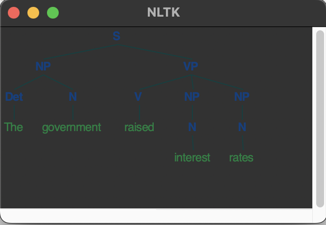
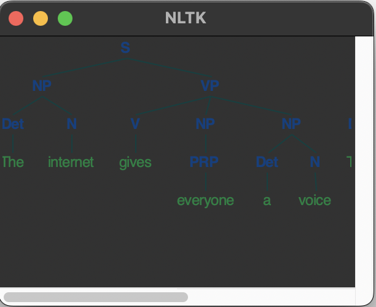
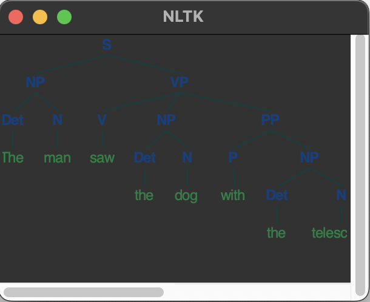

Parse Trees
A Python script that creates parse trees for a given sentence using NLTK's constituency parsing capabilities.
GitHub Repository
import nltk
from nltk.draw.tree import draw_trees
# Download required NLTK data
nltk.download('punkt', quiet=True)
def create_constituency_tree(sentence):
tokens = nltk.word_tokenize(sentence)
print(f"Tokens: {tokens}")
grammar = nltk.CFG.fromstring("""
S -> NP VP
NP -> Det N | Det N PP | N | PRP | Det ADJ N | NP CC NP
VP -> V | V NP | V NP PP | V NP NP
PP -> P NP
Det -> 'The' | 'the' | 'a' | 'an'
N -> 'government' | 'interest' | 'rates' | 'internet' | 'voice' | 'man' | 'dog' | 'telescope' | 'everyone'
V -> 'raised' | 'gives' | 'saw'
P -> 'with'
PRP -> 'everyone'
ADJ -> 'interest'
CC -> 'and'
""")
parser = nltk.ChartParser(grammar)
return list(parser.parse(tokens))
# Sentences to parse
sentences = [
"The government raised interest rates",
"The internet gives everyone a voice",
"The man saw the dog with the telescope"
]
# Create parse trees
all_trees = []
for sentence in sentences:
trees = create_constituency_tree(sentence)
unique_trees = list({str(tree): tree for tree in trees}.values())
all_trees.extend(unique_trees)
# Visualize unique trees for this sentence
if unique_trees:
draw_trees(*unique_trees)
Outputs
The government raised interest rates
The internet gives everyone a voice
The man saw the dog with the telescope
References
Finin, T., Fritzson, R., Mckay, D. & Mcentire, R. (1994) KQML as an agent communication language. Proceedings of the third international conference on Information and knowledge management (CIKM '94): 456–463. DOI:https://doi.org/10.1145/191246.191322
Genesereth, M.R. et al. (1992) Knowledge Interchange Format Version 3.0 Reference Manual. Logic 92(1).